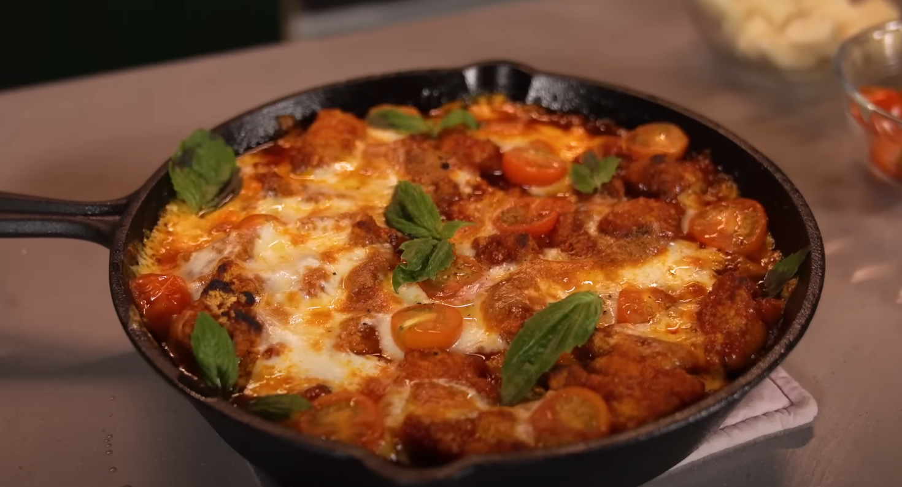

Orange Chicken Parmesan

Description
What do you get when you combine two of the greatest chicken dishes of all time?
This mouth-watering creation combines the tangy, sweet and salty Orange Chicken with the cheesy, savory goodness of Chicken Parmesan for a riduculous yet delicious mashup.
Ingredients
- 1 lb boneless skinless chicken thighs
- 1 tbsp soy sauce
- 2 tbsp rice wine vinegar
- 1 tsp sugar
- 1 egg white
- 1/4 tsp white pepper
- 2 tbsp vegetable oil
- 2 cloves minced garlic
- 1 pinch red chilli flakes
- 1 tbsp grated ginger
- 12 ounces tomato juice
- 1 tbsp orange zest
- 2 tbsp orange juice
- 1 tsp sriracha
- 1/2 tsp salt
- 1/2 tsp dried basil
- 1/2 tsp cracked fennel seed
- 1 tsp cornstarch
Steps
- Cut chicken thighs into bite-sized pieces.
- Whisk together egg white, soy, sauce, pepper vinegar, and sugar.
- Add in chicken pieces and let marinate.
- Heat oil in a sautee pan and add ginger and garlic. Stir fry for a few minutes until fragrant. Add the rest of the ingredients and cook for 6 minutes until sticky and reduced.
- Add cornstarch to chicken and stir until well-coated. Deep fry for 4 minutes, until golden brown, then remove and drain.
- Add chicken to the sticky tomato sauce and put it in a heat proof dish. Arrange halved cherry tomatoes around the saucy chicken and then add mozzarella cheese.
- Bake at 500 degrees for 8 minutes, until cheese is melty and golden. Top with fresh basil and a drizzle of olive oil.